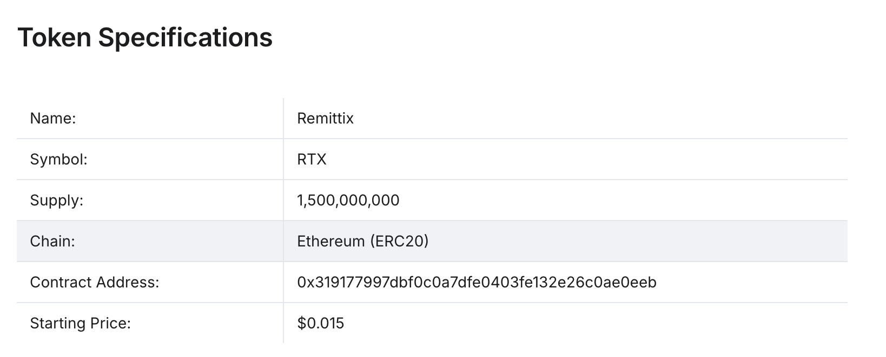
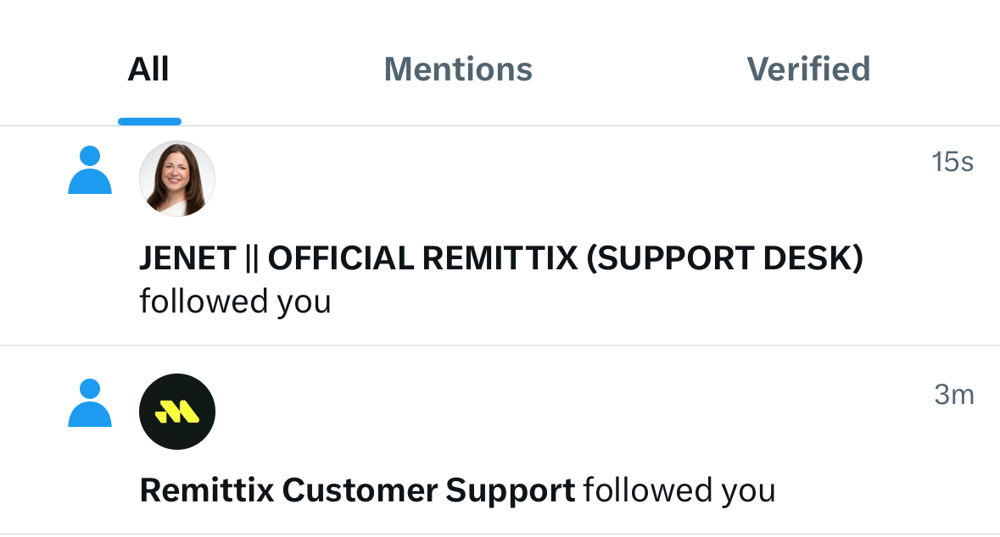

Remittix 是一个专注于解决跨境支付问题的平台，，可以通过 RTX 代币直接把加密货币转换为当地的法币。目前 已经预售了超过 5 亿枚 RTX 代币，筹集资金总额达到 1800 万美元。
RTX 以 ERC-20 的形式发售，这就有点奇怪了，意味着 RTX 无法承担起付手续费的作用。那么 Remittix 是怎么解决跨境支付问题的？
Remittix 的 路线图 是真实的，目前处于预售和 TGE 阶段，CMC 上已经有了 信息 但是没有正式的代币出来。
Remittix 的 白皮书 整体看下来，完全没有看到有用的信息，都是一些非常宏观的描述，市场规模多大、问题是什么、对比区块链技术等，根本没说 Remittix 的创新之处。
比如 这个页面，一直在说 Remittix 去中心化、交易确认速度快等。不是，你 ERC-20 的代币，随便一个人都能发、都能有这些特点的，到底解决了什么问题呢？
能明确的是，Remittix 仅仅只是用 ERC-20 发币而已，不是一条链，没有更多的技术含量在里面。
你一旦关注 Remittix 的 X 账号，就会有一些假装客服、技术支持的账号关注你。这种现象很常见，正经项目很少有这种冒充官方的账号：
Remittix 是骗子项目。Remittix 没有任何公开的代码仓库，也没有上交易所，只有一堆新闻文稿和预售金额放在那里，很难对这个项目产生信任。
所以我的结论是，Remittix 的性质和 Nexchain 一样，都属于骗子项目。甚至很多方面这两个项目有点像，比如预售的套路，给人的某种感觉，等等。
你也许觉得我这种判断方式太过武断了，比如 RTX 在 CMC 上有 5k 收藏量是实打实的，如果 RTX 是骗子项目，会有那么多人信吗？这也是我困惑的点，我理解不了为什么有那么多人相信这个项目，那么多人参与预售，理解不了为什么。
虽然理解不了，但是根据我自己的判断，尤其是从技术角度的判断，Remittix 就是骗子项目。
另外，由于 Remittix 是用 ERC-20 发币，没有什么技术方面可分析的，有点没意思。上一个分析的项目 Nexchain 也是这样。这种情况不太好，我还是倾向于看点有技术内容的项目，所以以后得更小心选择项目才行。不过这种情况又有点难以避免，就像我一开始说的，我没办法在选择项目的时候，就知道项目有没有技术含量。